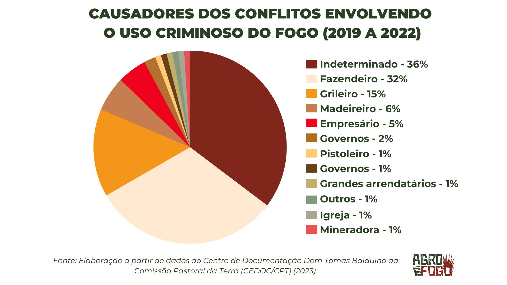

Presidência da CPI do MST, representando a bancada ruralista da câmara dos deputados. Bruno Spada/Câmara dos Deputados
"Agro é tech, agro é pop, agro é tudo" é o slogan da famosa campanha realizada pela Rede Globo. A rede de televisão cometeu um erro grave, talvez por não conseguir enfrentar o lobby ruralista, ou porque ganham algo com isso. No entanto, não é possível afirmar com certeza. O que se sabe é que a tal "indústria-riqueza do Brasil" não é tão pop quando se trata de meio ambiente, ou, ao menos, não deveria ser. Isso não significa que o GreenNews endossa a visão de "globolixo", mas nem por isso deixaremos de realizar críticas.
Segundo o artigo 255 da Constituição Federal, "Todos têm direito ao meio ambiente ecologicamente equilibrado", sendo dever do Estado assegurar a efetividade desse direito. Entretanto, isso fica só na teoria, levando todos ao status de "cidadãos de papel" – conceito criado pelo jornalista Gilberto Dimenstein em seu livro "O Cidadão de Papel", que consiste no indivíduo que tem um direito assegurado teoricamente, porém não se concretiza –, já que o Estado não cumpre o seu trabalho de proteger a fauna e a flora brasileira dos grandes produtores rurais. Esses utilizam de técnicas e métodos que submetem animais à crueldade, como as queimadas, comportam riscos à qualidade de vida e degradam o meio ambiente.
Diferentemente do que é mostrado pela mídia hegemônica, as queimadas não se tratam de meros acidentes causados por latifundiários, mas de incêndios criminosos, causados dolosamente. Segundo a articulação Agro é Fogo, juntos, fazendeiros e grileiros representam 47% dos causadores de conflitos utilizando o uso criminoso do fogo de 2019 a 2022. Isso mostra que o agronegócio não só degrada o meio ambiente desenfreadamente, como o faz de maneira criminosa, sem respeitar a Carta Magna, o código penal ou qualquer outra legislação. Apesar disso, eles fazem parte do poder legislativo, ou seja, legislam e, quando não conseguem transformar o próprio interesse em regulamento, passam por cima da lei.
Nesse contexto também pode ser lembrado o marco temporal das terras indígenas, a essência da ganância dessas classes altas rurais, que se traduziu na aprovação de um texto que desconsidera que o Brasil foi invadido, e que os únicos que, com efeito, protegem a fauna e a flora do nosso país são os povos indígenas. Segundo um estudo feito pelo Instituto de Pesquisa Ambiental da Amazônia (Ipam), a lei pode levar a um desmatamento com uma emissão estimada de 7,6 a 18,7 bilhões de toneladas de dióxido de carbono, equivalente a um período de emissão de 5 a 14 anos. É um projeto suicida, apoiado pela direita e extrema direita – a mesma do ex-presidente Jair Bolsonaro, o autor da icônica frase "Eu comeria o índio sem problema nenhum" –, que não tem responsabilidade alguma com a preservação do meio ambiente ou, pior que isso, com a cultura brasileira.
E é natural que o latifundiário não se preocupe com o meio ambiente, afinal não vai ser ele que vai sofrer as consequências, mas esse egoísmo tem preço, e é claro que, como isso é Brasil, quem paga é o mais pobre. Lembrem-se que, quando o planeta aquece, a parte mais pobre da sociedade que tem de conviver com o calor, porque não tem ar-condicionado. Ou quando há uma chuva forte, nunca é o rico que tem sua casa alagada, ou sofre com desmoronamento. Também não tem sua casa transformada em chamas por conta das queimadas. Com isso, é evidente que o grande agricultor destrói, mas nunca a si mesmo
O Estado tem feito vista grossa para os crimes praticados pelos latifundiários, que seguem passando por cima de tudo e de todos, às vezes literalmente, sem se importar com os povos originários brasileiros, com os impactos socioambientais ou sequer com a legislação. É crucial que haja uma fiscalização estatal mais rígida em relação a essas ilegalidades, fortalecendo órgãos importantíssimos, como o IBAMA, a FUNAI e o INCRA. Também é necessário que a mídia pare de relativizar o praticado por esses criminosos e pare de enganar o brasileiro, porque o agro não é pop.